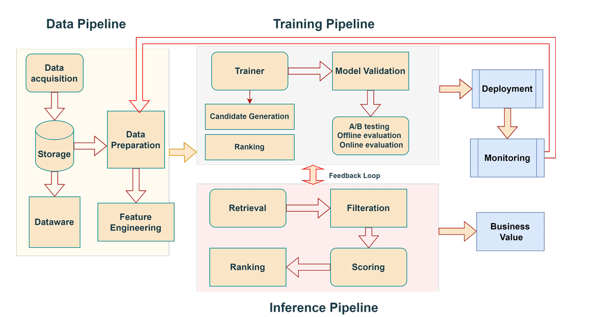
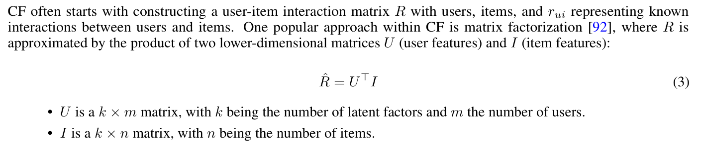
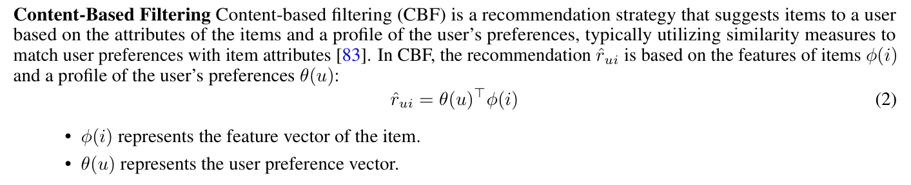
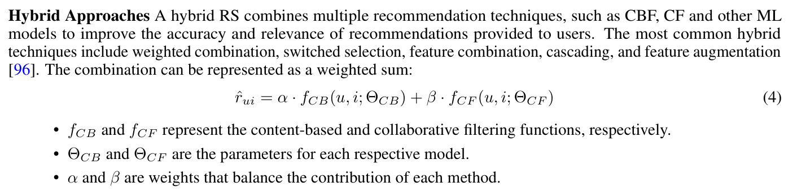
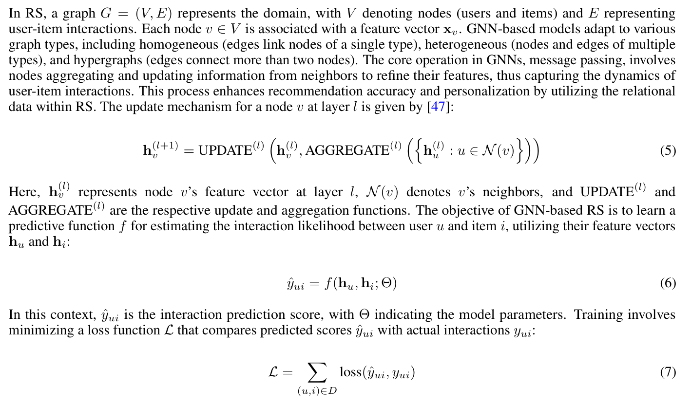

Abstract
Recommender Systems (RS) play an integral role in enhancing user experiences by providing personalized item suggestions. This survey reviews the progress in RS inclusively from 2017 to 2024, effectively connecting theoretical advances with practical applications. We explore the development from traditional RS techniques like content-based and collaborative filtering to advanced methods involving deep learning, graph-based models, reinforcement learning, and large language models. We also discuss specialized systems such as context-aware, review-based, and fairness-aware RS. The primary goal of this survey is to bridge theory with practice. It addresses challenges across various sectors, including e-commerce, healthcare, and finance, emphasizing the need for scalable, real-time, and trustworthy solutions. Through this survey, we promote stronger partnerships between academic research and industry practices. The insights offered by this survey aim to guide industry professionals in optimizing RS deployment and to inspire future research directions, especially in addressing emerging technological and societal trends2 . The survey resources are available in the public GitHub repository https://github.com/VectorInstitute/Recommender-Systems-Survey.
Introduction
Main Contributions
- This survey provides a comprehensive review of RS, tracing their development from theoretical foundations to practical applications between 2017 and 2023. It is the first survey to specifically highlight the translation of theoretical advancements into practical solutions for industry challenges.
- Each type of RS is thoroughly examined, including data input methods, associated challenges, relevant datasets, evaluation metrics, model accuracy, and practical applications, as presented in tables. The survey aims to offer industry professionals a set of guidelines to facilitate the deployment of these systems in real-world settings.
- We discuss the specific challenges faced by RS in various sectors, such as e-commerce, healthcare, finance, and others. The survey emphasizes the need for scalable, real-time, and privacy-focused solutions, demonstrating how theoretical insights can address these industry-specific demands.

Traditional RS methods can be categorized into collaborative filtering, content-based filtering, and hybrid approaches.
Collaborative filtering (CF) [70] is based on the idea that users with similar preferences will likely have similar tastes in the future. CF recommends items by finding a neighborhood of similar users or items. CF can recommend items without needing much content analysis, however, it normally faces challenges like cold starts, scalability, and sparsity.

Content-based filtering (CBF) [72] recommends items based on a user past preferences and item characteristics, using techniques like Term Frequency- Inverse Document Frequency (TF-IDF), cosine similarity, and neural networks for item representation. However, it may struggle with recommending new or unseen items.

Hybrid RS [36] combine the strengths of both approaches, offering more accurate and personalized recommendations by integrating diverse methodologies.

Modeling Techniques
Graph-based Recommender Systems
GNNs can effectively address various practical challenges by modeling complex relationships in data.

Dynamic Graph Neural Networks for Sequential Recommendation
Sequential and Session-based Recommender Systems
Sequential recommendation is commonly viewed as a next-item or next-basket prediction challenge [37]. Both the sequential and session-based RS leverage user action sequences to anticipate users’ future preferences [95]. Specifically, sequential RS consider the interaction histories of the users to predict future behaviour or users’ preferences. In contrast, session-based RS, detailed in survey [38], focus on short-term user activity for real-time recommendations. These approaches collectively enhance personalization and relevance across diverse platforms.
Frequency Enhanced Hybrid Attention Network for Sequential Recommendation
Knowledge Prompt-tuning for Sequential Recommendation
Knowledge-based Recommender Systems
A KG is a directed graph G = (V, E), where V and E represent entities and relations between them, respectively, with E ⊆ V × V . It includes entity type function Φ : V → A and relation type function Ψ : E → R, mapping entities to types A and relations to types R. KGs are depicted as sets of triples ⟨eh, r, et⟩, signifying a relation r from eh to et.
Embedding-based approaches focus on learning and applying embeddings to represent KG entities (nodes) and relations (edges), enhancing user and item representations. They typically start with initial embedding generation using models like TransE [309], TransD [198], and node2vec [310], followed by their application in RS through attention mechanisms in KSR [229] or generative models like BEM [176] and KTGAN [311].
Joint Learning Methods optimize both KG embeddings and recommendation components simultaneously using a unified loss function. Examples include CKE [112], which integrates auto-encoders for item representations, and SHINE [312], which acquires user embeddings from heterogeneous graphs. Multi-Task Methods such as KTUP [221] and MKR [206] address KG-enhanced recommendation and KG completion concurrently, improving both entity/relation representations and recommendations.
Propagation-based approaches influence embeddings through multi-hop neighbor interactions within the KG. Item KG-based methods like Ripplenet [215] aggregate item-related embeddings to derive user interests, whereas User-Item KG-based methods such as KGAT [197] and Intentgc [195] refine both user and item embeddings by propagating embeddings across a user-item graph, enhancing recommendation accuracy.
Overall, these systems enable more contextually aware, personalized, and efficient recommendation systems, significantly improving user experience across these sectors.
Bayesian Knowledge-driven Critiquing with Indirect Evidence DiffKG - Knowledge Graph Diffusion Model for Recommendation
Reinforcement Learning-based Recommender Systems
By employing techniques such as deep Q-networks and policy gradient methods, RL-based recommender systems continuously refine their decision-making processes, leading to improved long-term user engagement and satisfaction.
Large Language Model based Recommender Systems
The integration of BERT-like models into RS has led to significant advancements. Initial applications like BERT4REC [228] utilized deep bidirectional self-attention for modeling user behavior sequences, while further developments employed BERT for tasks ranging from conversational RS [78] to CTR prediction [339]. Enhancements in BERT-based models have addressed specific RS challenges, such as item alignment in dialogues [340] and user representation through models like U-BERT [341] and UserBERT [342]. Further innovations include BERT-based re-ranking [343] and addressing data sparsity in group recommendations [344].
Prompt-based and in-context learning (ICL) approaches have leveraged the adaptability of LLMs, employing personalized prompts and natural language processing to enhance recommendation relevance and user interaction without extensive retraining [345, 293].
LLMs have advanced RS by addressing key challenges such as the cold-start problem, enhancing personalization, and improving accuracy.
RecMind - Large Language Model Powered Agent For Recommendation
Multimodal Recommender Systems
The evolution of multi-modal RS began with the introduction of Visual Bayesian Personalized Ranking (VBPR) [349], which enhances personalized ranking by integrating visual features from product images. The results showed improved accuracy and addressing cold-start issues. Attentive Collaborative Filtering (ACF) [350] introduced a novel attention mechanism to better handle item- and component-level feedback in multimedia recommendations.
Collaborative Cross Networks (CoNet) [351] utilizes deep transfer learning. Multi-Modality enriched Sequential Recommendation (MMSR) [249], a graph-based model, adaptively fuses multi-modal information to dynamically prioritize modalities based on their sequential relationships.
Adaptive Multi-Modalities Fusion in Sequential Recommendation Systems PromptMM - Multi-Modal Knowledge Distillation for Recommendation with Prompt-Tuning
Specialized Recommender Systems
Context-aware Recommender Systems
Context-aware recommender systems (CARS) are advanced RS that enhance the personalization of content by incorporating contextual information into the recommendation process [33]. Unlike traditional RS that primarily rely on user-item interactions, CARS consider additional dimensions such as time, location, social settings, and user behavior patterns to deliver more relevant and timely suggestions [352].
Among these, factorization machines (FM) [353] are prominent for their ability to capture interactions between variables within large datasets. Field-Aware Factorization Machines (FFMs) [354] are specifically optimized for CTR prediction, showing the versatility and depth of models developed for enhancing CARS’ performance.
Review-based Recommender Systems
A review-based RS uses textual reviews and ratings from users to generate personalized recommendations for products or services [358, 45]. The review-based RS have evolved by improving through various models. Initially, models like Hidden Factors as Topics (HFT) [359] aligned topics from reviews with latent dimensions from ratings. Successive approaches, such as Rating-Boosted Latent Topics (RBLT) [360], Topic Initialized Latent Factor Model (TIM) [307], and deep learning models like Convolutional Matrix Factorization (ConvMF) [361] and Deep Cooperative Neural Networks (DeepCoNN) [87], utilized neural networks to better handle sparse data and extract nuanced features from reviews.
Aspect-based Recommender Systems
Aspect-based RS extract and analyze specific product attributes from reviews, providing tailored recommendations to the users based on item aspects [376]. This approach to RS differs with review-based RS, which assess overall user sentiment and preferences from review content.
Aspect-based RS effectively address several practical challenges by focusing on specific product attributes extracted from user reviews. These systems enhance personalization by tailoring recommendations based on individual user preferences and item characteristics.
Explainable and Trustworthy Recommender Systems
Advancements in explainable and trustworthy RS have evolved, starting with phrase-level analysis of user reviews to enhance recommendation explainability by identifying critical item aspects [389]. Subsequent models like Tripartite Graph Ranking (TriRank) have improved top-N recommendations by extracting aspects from reviews and creating a user-item-aspect ternary relation [390]. Concurrently, models such as the Tree-Enhanced Embedding Model (TEM) merge embedding-based and tree-based methods with an attention network to ensure transparency, utilizing rich side information and explicit decision rules [391]. This integration extends to combining CF with structured knowledge bases and unstructured data like textual reviews for personalized and understandable recommendations [392]. Additionally, techniques like RL have been applied to generate flexible, high-quality explanations across recommendation models [251].
Recent efforts like the Counterfactual Explainable Fairness (CEF) framework focus on identifying and mitigating fairness issues in RS [397].
Explainable Fairness in Recommendation
Fairness, Accountability, Transparency, and Ethics (FATE) in Recommender Systems
Fairness in RS, as outlined in [401], refers to the ethical principle and requirement that recommender algorithms allocate resource (information, opportunities, or exposure) in a manner that is equitable and just across different users and items.
Pre-processing Fairness Methods Pre-processing efforts for fairness in RS involve adjusting training data, altering proportions of protected groups (like gender, race, age) through resampling [174] or adding synthetic data [402]. These methods aim to mitigate biases in input data before model training, they struggle to entirely eliminate biases that appear during training or inference.
In-processing Fairness Methods In-processing fairness methods in RS primarily utilize ranking approaches and advanced techniques to incorporate fairness directly into model training, yielding more immediate improvements by modifying elements closely tied to the final output. Regularization techniques play a crucial role by embedding fairness constraints or penalties into the objective function to balance accuracy with fairness
Adversarial learning further enhances fairness by learning representations that maintain independence from sensitive attributes or ensure equitable distribution across groups
Post-Processing Fairness Methods Post-processing methods involve adjusting the initial output of a recommendation model to satisfy certain fairness criteria before presenting the final recommendations to users.
Bias Reduction News Recommendation System
Fairness among New Items in Cold Start Recommender Systems
Applications
Numerous platforms have leveraged advanced RS technologies to enhance user engagement and content personalization. YouTube employs deep neural networks to refine its recommendation process, focusing on optimal ranking and selection of videos [488]. Google Play utilizes both linear models and neural networks within its Wide & Deep Learning framework to achieve a balance between memorization and generalization [97]. LinkedIn enhances job and content recommendation using real-time processing and scoring mechanisms, integrating CF and deep learning to match job seekers with suitable opportunities [132, 489]. Twitter customizes its content recommendations, like tweets and follower suggestions, based on user behavior and preferences [490].
ByteDance has introduced innovative models for TikTok to quickly adapt recommendations to user interactions, employing unique retrieval models and scalable systems like Monolith, which uses collisionless embedding tables for efficient memory usage [491, 492]. Apple has developed the Sliced Anti-symmetric Decomposition (SAD) model to enhance collaborative filtering, allowing more nuanced user-item interactions, and explores controlled music production using diffusion models [493, 494]. DeepMind’s generative models improve RS by decoding Semantic IDs from user interactions, enhancing item retrieval and system performance [495].